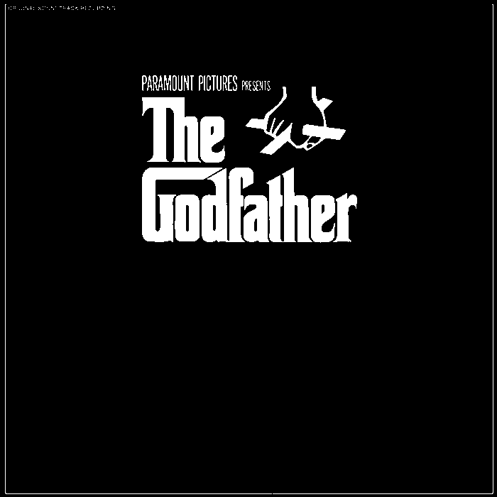
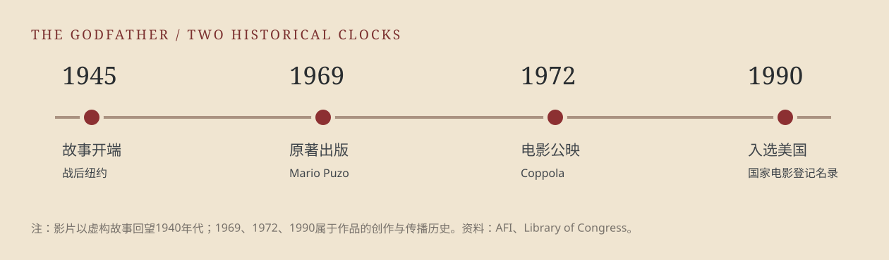
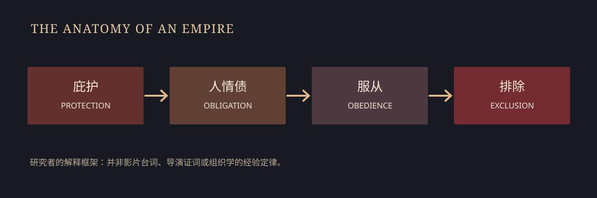

I.
医院 / Hospital
冷静首次成为可见的权力能力。保护父亲的情感动机，与处理危险的组织能力开始连接。
为什么一个拼命保护家庭的人，最后会失去他原本想要保护的一切？这不只是黑帮史诗，也是一个关于美国梦、忠诚与现代权力的悲剧。

一切都从一个黑暗的房间开始。没有追逐，没有枪声，甚至没有正面展示那个日后会成为电影史象征的人。殡仪业者Bonasera说出“I believe in America”，然后讲述自己在美国法律面前遭遇的挫败。
房间的主人维托·柯里昂安静地听着。他像一位耐心的父亲，又像掌握最终裁断权的法官。窗外是女儿的婚礼：宾客起舞，阳光明亮，家庭看起来充满欢笑。窗内则在协商另一种秩序——谁能获得帮助，谁必须付出代价，以及谁最终有资格定义“公正”。
这就是《教父》的第一个陷阱。观众很容易同情求助者的不甘，进而欣赏维托的镇定与权威。直到我们意识到：这个看似温情的救济体系，不接受公开规则的约束。它把保护变成恩情，把恩情变成债务，把债务变成未来的服从。

维托·柯里昂并不令人反感，至少不是传统反派的那种令人反感。他重视礼貌，尊重长者，对孩子抱有切实的关心，甚至愿意在商业争端面前表现克制。他让人想到移民家庭努力争取体面生活时的坚忍：如果外部世界没有提供安全，那么安全只能靠自己建立。
而这恰恰是问题所在。一个足够强大的庇护者往往同时是规则的制定者和执行者。当一家人的命运集中在一个人的判断上，忠诚便逐渐不再只是情感，它成为政治资源。维托的温情是真实的；他使用的暴力也是真实的。前者不会消灭后者。
英国电影协会把这部作品视为犯罪片、移民史、家庭史和有关美国权力欲的警示。研究者Paul A. Cantor进一步指出，父子两代柯里昂的故事，可以从西西里旧世界的关系伦理向美国现代商业秩序的过渡中理解。[3][4]
这不是说真实的意大利移民生活就等于影片里的犯罪故事。《教父》讲述的是一个极特殊的虚构家庭。它之所以具有更普遍的力量，是因为我们在这个极端情境中看见了一个日常难题：为了守住自己珍视的生活，人究竟可以走多远？
如果一个人为了保护家庭而获得权力，本刊原创分析，不是电影台词
却要靠牺牲家庭来维持权力，
那么他究竟保护了什么？
婚礼上，迈克尔穿着与家庭气氛不太协调的军装。他向Kay介绍家族时，语气里带有克制的距离。他仿佛是那个能够走出父亲世界的人：参过军，见过更宽广的美国，准备拥有一段不必受家族秘密支配的私人生活。
然后，父亲遇袭。医院里的迈克尔第一次显露出一种惊人的冷静：在危险迫近时，他仍能迅速判断、组织，甚至让更紧张的人跟随自己。危险没有让他崩溃，反而使他发现了自己的另一种能力。
餐馆则把这种能力推进到不可撤销的决定。等待中的沉默、旁人的话语、环境的噪声和迈克尔的表情共同构成了一种几乎可以被触摸的心理压力。我们既理解他为什么走到这里，又无法否认这里是他失去另一种人生的转折。
最重要的是，他之后的行为常常不是以“我想统治”为宣言，而是以“我必须保护家人”为理由。每次行动都可以被解释成下一步危险的预防。于是，一种没有终点的安全需求出现了：为了不再遭到威胁，他必须拥有更多控制；而控制越多，就越难允许信任与自由存在。
冷静首次成为可见的权力能力。保护父亲的情感动机，与处理危险的组织能力开始连接。
等待、沉默与一个无法回头的决定。迈克尔跨越的不只是法律边界，也是身份边界。
当Kay被留在门外，家庭亲密与权力秘密终于被可视化为两个不再相通的空间。

《教父》的视觉语言近乎反抗了“让一切清楚可见”的直觉。摄影师Gordon Willis利用低调照明、深沉的暖色和大量遮蔽，令办公室仿佛一个道德边界不再透明的世界。阴影停留在维托的眼睛周围；看得见他的姿态，却未必看得穿他的决定。[5]
这种画面不只是高级的复古装饰。人物被摆放在哪里，谁能够进入办公室，哪一扇门被关上，谁只能站在门外，这些空间关系本身就在叙述权力。组织的秘密不是由旁白告知，而是由镜头的视线和门槛安排。
电影的音乐同样迷人。Nino Rota的主题不是冷酷的机械节奏，而是带着乡愁和伤感的旋律。恰恰因为它让人物世界具有温度，我们才更容易感受到那种温度与伤害并存的矛盾。欣赏它的情感美学，不等于赞同片中的暴力。
.jpg?width=900)
本刊编者按 · 图像为导演档案照而非影片剧照
影片末段的洗礼蒙太奇是一个令人屏息的设计。一边是宗教仪式中的承诺、家庭身份的确认，以及公共空间里的庄重语言；另一边则是同步发生的暴力清算。剪辑没有让我们先看到一种行为、再评价另一种行为，而是把二者织成同一个时间结构。
这正是电影形式具有力量的地方。导演没有写下一篇关于虚伪的道德论文，却让权力的双重性在影像之间自行显露：一个人可以在公共仪式中扮演守护者，同时以秘密命令完成对他人生命的剥夺。
最后，Kay看见门在她面前合上。这个极其简单的动作，为前面长达数小时的家族与权力讨论提供了几乎无声的答案：迈克尔的世界越来越有秩序，却越来越不允许他曾经亲近的人进入。
电影并不要求观众用一句“他是好人”或“他是坏人”结束判断。它问得更痛苦：一个人不断做出有用、有效、看起来必要的决定，会不会恰好因此失去做人的自由？
一扇门合上。本刊原创结语 · 对片尾视觉结构的解读
他得到了一整个帝国，
却失去了一种生活。
它让人着迷，部分原因在于柯里昂家族如此善于解决问题。他们理解情报、管理、规则、人际网络与市场变动。在传统的成功叙事中，这些都算能力：管理一场危机，巩固一个组织，战胜竞争者，保全家族资产。
然而镜头一次次提醒我们，能力和幸福并不是同一件事。迈克尔越像一个成功的经营者，越远离他最初可能拥有的生活。人类学研究和移民叙事研究都注意到影片中亲密家庭与非人格化商业逻辑之间的张力。[4][6]
这也是为什么1972年的《教父》可以越过黑帮类型，变成关于现代性的故事。在它的虚构世界里，家庭是最神圣的词语，也是最容易被拿来解释权力的词语；忠诚使人免于孤独，也可能使人无法退出。电影将这些悖论变成了可观看、可重复讨论的历史感受。
当然，这种解读不能替代对意大利裔美国人真实生活的研究。影片上映前后已有关于族群刻板形象的争论。它令人理解移民身份与奋斗感，却也可能让犯罪叙事占据公众对一整个社群的想象空间。欣赏作品与检视它的文化后果，理应同时发生。[7]
《Echoes of an Era》前两期都从音乐出发：1969年的《Space Oddity》问技术的胜利是否能填补人的孤独；1971年的《American Pie》问一个国家如何为失去的青春唱挽歌。第三期走进1972年的《教父》，问题变得更加沉重：当一个时代把权力和成功当成安全的保证，得到这些的人，是否反而可能成为最不自由的人？
影片入选1990年美国国家电影登记名录，1973年获三项奥斯卡奖；这些是可以查证的电影史事实。至于它究竟如何评价资本主义、宗教与家族，则应永远留给作品、档案与读者之间持续发生的讨论。[2][8]
本期使用原创建模插画、原创时间线与权力图；不擅自转载电影剧照或原版海报。导演档案照片来自Wikimedia Commons并逐图标注许可。以下为核对历史事实与扩展阅读的公开入口：
若希望观看电影原版海报、剧照与制作档案，请直接访问奥斯卡学院《教父》馆藏入口。电影文本分析是有证据支持的解释，不应误作导演全部意图；移民与资本主义的比较不等于对现实族群或企业的整体断言。
学术研究版进一步讨论十三章内容：电影史、叙事方法、父子权力、资本主义隐喻、摄影与配乐、宗教、性别、移民身份、接受史与论证局限，附可追踪参考文献。
阅读全文 · ACADEMIC RESEARCH ↗